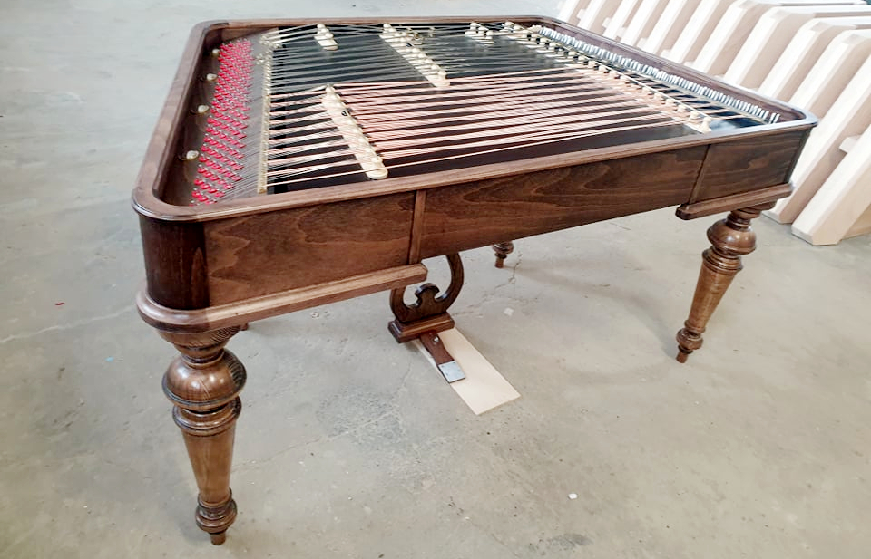
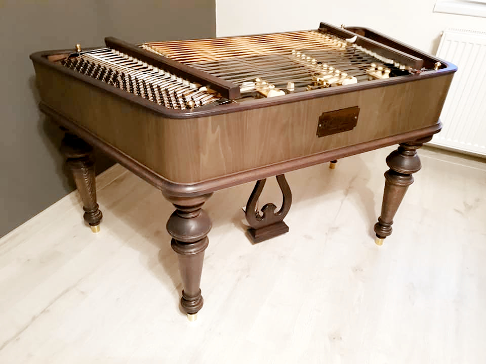
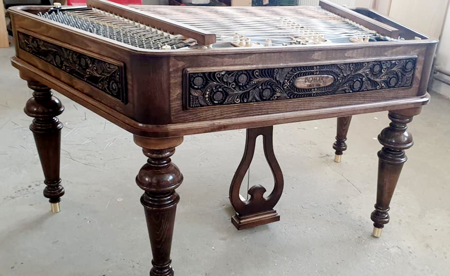
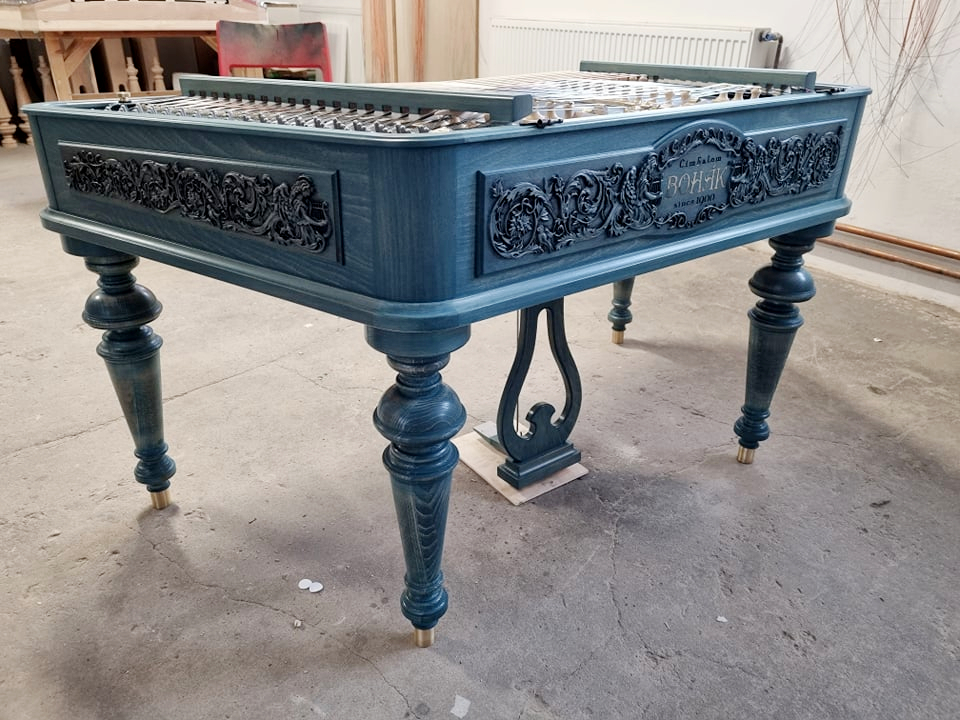

Ceník pro rok 2022

model Standard
| Tónový rozsah | C - a3 |
| Základné prevedenie | buk |
| Základná povrchová úprava | hnedá |
| Kobylky | javor |
| Váha | 56 - 58 kg |
Cena tohto modelu je 3.180,- EUR.

model Luxury
| Tónový rozsah | C - a3 |
| Základné prevedenie | buk |
| Základná povrchová úprava | hnedá |
| Kobylky | KNCJV |
| Nohy | mosadzné kopýtka, dve nohy sú výškovo stavitelné |
| Struny | lakované |
Cena tohto modelu je 3.650,- EUR.

model Retro
| Tónový rozsah | C - a3 |
| Základné prevedenie | buk (možnost výberu iných drevín, napríklad orech) |
| Kobylky | KNCJV |
| Rezby | kvety |
| Nohy | mosadzné kopýtka, dve nohy sú výškovo stavitelné |
| Struny | lakované |
Cena tohto modelu je 4.800,- EUR.

model Luxury Superior
| Tónový rozsah | C - a3 |
| Základné prevedenie | buk (možnost výberu iných drevín, napríklad orech) |
| Povrchová úprava | hnedá, jantár, dub antický, biela, slonová kosť |
| Kobylky | KNCJV |
| Rezby | anjel |
| Nohy | mosadzné kopýtka, dve nohy sú výškovo stavitelné |
| Struny | lakované |
| Poklop | v ceně |
Cena tohto modelu je 5.300,- EUR.

Volitelná výbava
| Politúra - indický šelak, peterburg, polomatná šelaková politúra | 600 EUR |
| Závesné a ladiace kolíky potiahnuté 14 karátovým zlatom | 800 EUR |
| Tlmiaci systém vysokých tónov | 500 EUR |
| Puzdro | 490 EUR |
| Poklop | 180 EUR |
Záruka
- 2 roky na lepené části
- 5 rokov na ladiace hlavy
- 20 rokov na oceľové výztuže
Dodacie lehoty
- 6 - 7 mesiacov na modely Standard a Luxury
- 8 - 9 mesiacov na modely Retro a Luxury Superior
Všetky ceny su uvedené vratane DPH.
Možnost kúpy na splátky.